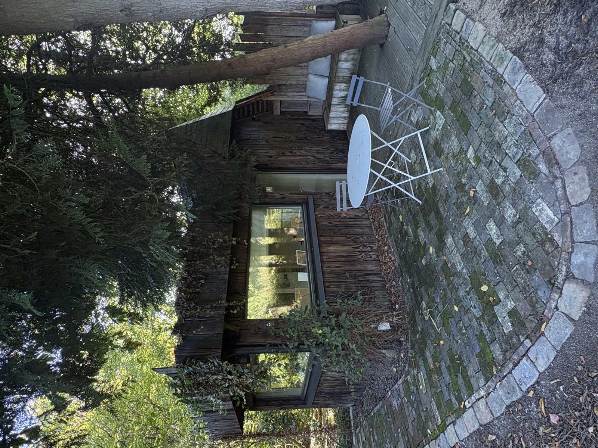
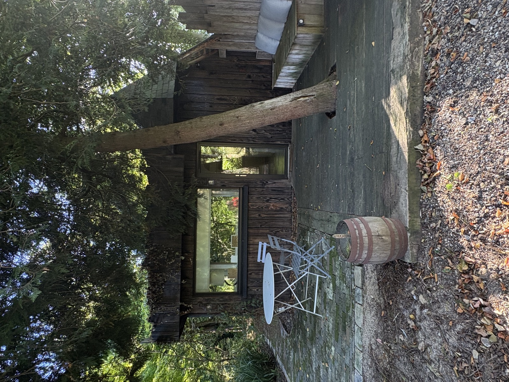
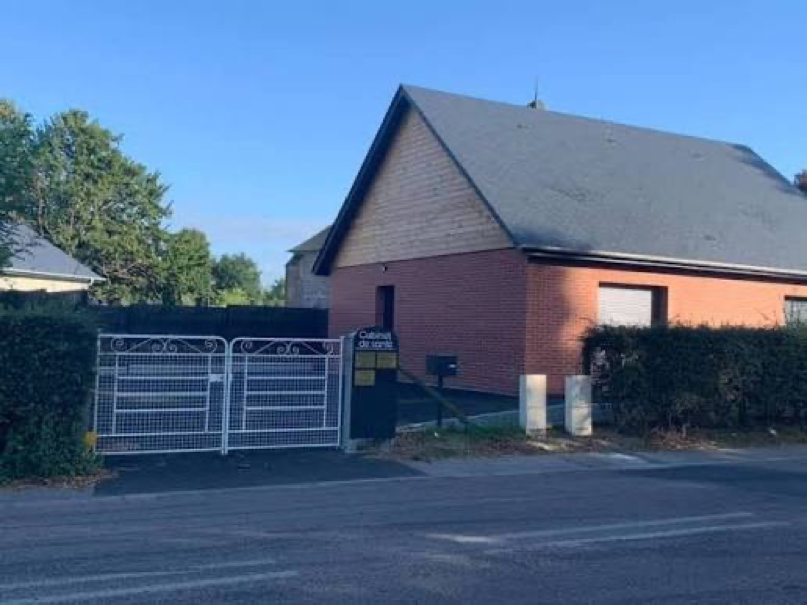

MES CABINETS DE NATUROPATHIE
Amélie vous reçoit dans deux cabinets en Seine-Maritime, entre Dieppe et le Pays de Caux.


CABINET D'OMONVILLE
Un cabinet chaleureux en bois, niché dans un cadre verdoyant et paisible, à l'écart de l'agitation. L'endroit idéal pour se poser le temps d'une consultation, avec sa terrasse ombragée pour patienter avant votre rendez-vous.
Adresse : 236 Rue de la Chevrière, 76730 Omonville
Jours de consultation : mardi, mercredi, jeudi
MAISON DE SANTÉ DE LUNERAY
Le vendredi, Amélie consulte à la maison de santé de Luneray, un cabinet partagé entre plusieurs professionnels de santé, facilement accessible en plein cœur du village.
Adresse : Rue de la République, 76810 Luneray
Jour de consultation : vendredi

PRENDRE RENDEZ-VOUS
Choisissez votre créneau en ligne : le lieu du rendez-vous (Omonville ou Luneray) dépend simplement du jour choisi.
Réserver un rendez-vous